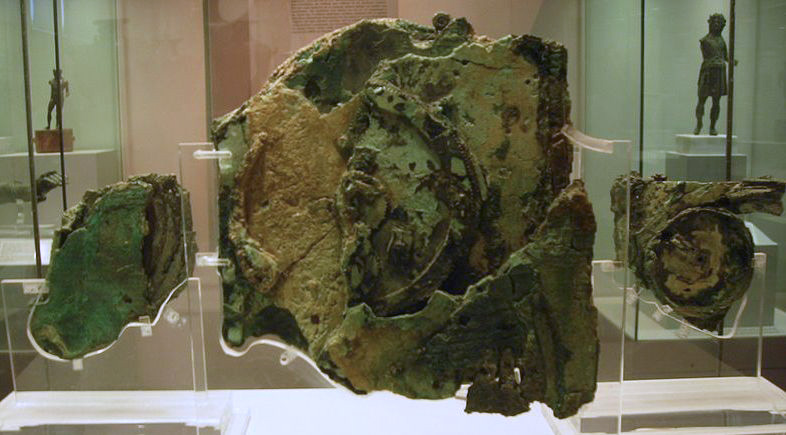

FILE A42-HS-029 // HISTORY & SOCIETIES
The Antikythera Mechanism and “Suppressed” Ancient Technology
ASSESSMENT: A remarkable ancient instrument is publicly studied, not hidden by historians.
The Antikythera mechanism was a geared device recovered from a Greek shipwreck. Some claims say scholars suppress proof of a lost industrial civilization. X-ray tomography revealed its complex astronomical functions and prompted open research. The artifact is extraordinary evidence of ancient craftsmanship, not evidence of an erased global technology.


Claim and historical context
Greek sponge divers found the wreck in 1900 near Antikythera. The corroded mechanism was recovered with other objects and entered the National Archaeological Museum in Athens. Its gears were initially difficult to interpret, and decades of imaging gradually clarified the inscriptions and structure.
Chronology and primary record
Radiography and high-resolution tomography exposed gear trains and Greek inscriptions. Research teams published reconstructions describing a calendrical and astronomical calculator. Papers, museum displays, and international collaborations make methods and interpretations accessible rather than concealed.
What the record establishes
Scholars continue to debate the precise display, gear arrangement, and intended users. The mechanism demonstrates sophisticated Hellenistic engineering; its survival is rare, so absence of many comparable examples is not proof they were destroyed in a coordinated purge.
Competing interpretations and counterevidence
Popular accounts often leap from one complex device to steam engines or electricity without intermediate artifacts, workshops, or technical texts. Such claims are not supported by the mechanism’s known functions. The find has instead expanded published understanding of ancient mechanical astronomy.
Calibrated verdict
The verdict is a genuine, exceptional machine whose study has revised assumptions about ancient science. The suppression narrative is contradicted by decades of transparent research. Missing comparative objects remain an archaeological question, not a demonstrated cover-up.
Evidence that could change this assessment
Additional gears, workshop debris, or contemporary technical texts could broaden the mechanism’s historical context. A claim of suppression would require evidence that identifiable institutions knowingly hid comparable artifacts; open publications and museum access point the other way.
Source notes and limitations
These selected records and named research sources address The Antikythera Mechanism and “Suppressed” Ancient Technology; each citation supports only the specific historical point identified in its note.
- National Archaeological Museum of Athens, “Antikythera Mechanism”Museum collection record and object context.
- Freeth et al., “Decoding the ancient Greek astronomical calculator known as the Antikythera Mechanism,” NaturePeer-reviewed tomography and reconstruction research.
- Antikythera Mechanism Research ProjectProject site linking its technical research and publications.